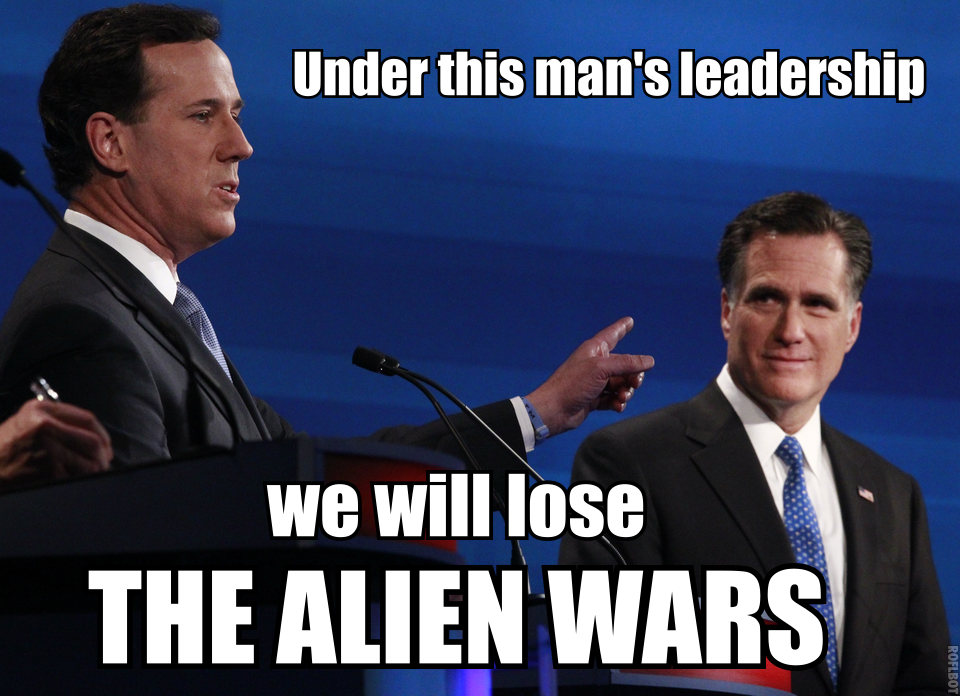

Think about it - by the time I’m in my 40s, “What is the most difficult video game you’ve ever beaten?” will be a question they ask presidential candidates.
Some up-and-coming senator will say “Zelda 2” and pole vault himself to front runner status.

Senator Jones (D-NY, XBox Gamerscore: 13350) has the floor. “My opponent claims to have beaten Superman64. This is clearly a publicity stunt—no human being has beaten Superman64.”
My friend Dan says:
The real joy would be to just walk up to the floor like the Strom Thurmond of the electronic gaming age, “My fellow representatives, when I took up Donkey Kong, it was not to promote mindless achievements and meaningless score inflation…”
I pray with all of my heart that in my lifetime, somebody will be unironically described as “The Strom Thurmond of the electronic gaming age”